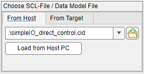
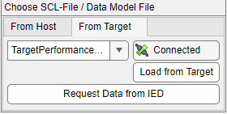

IEC 61850 - Client Transceiver — Reads/writes data from and to the input and output port of the block
This block is used to send and receive data attribute values or to send direct control commands for data objects to the remote MMS Server. Your model can contain multiple IEC 61850 Client Transceiver blocks for each MMS Connection in your target machine. To be able to select data attributes, a .cid file must be imported into the Transceiver from the remote intelligent electronic device (IED).
For each data attribute selected, an input port is created and will generate write requests to the MMS server.
The Operate port allows the user to manage the direct control command. This input is only active if the Activate Control Mode checkbox is enabled and at least one data object is selected. Send a boolean value of 1 to operate or 0 to disable the transmission of operate commands.
A port is created for each data object selected for direct control. The port takes the value to be sent to the IED for operation. This input is only active if the Activate Control Mode checkbox is enabled.
Each output port represents a data attribute and will send read requests to the MMS server. The data type of the output port is defined in the Transceiver Port Data Type dropdown list in the block mask.
Use Byte Unpack blocks to convert to signed values or floating-point numbers. You can unpack a vector of type uint16 and length 4 to one double value.
Apply the Client Station ID of the corresponding Setup block. Must range between 0 and 65535.
Apply the Connection ID of the corresponding Connection block. Must range between 0 and 65535.
The polling time is the time interval between sending MMS messages to the server. Must range between 0 and 360,000 ms, which corresponds to a maximum of 6 minutes. The default value is 50 ms.
This dropdown list defines the data attribute type. The supported data types are:
Double
Single
The port will be a float.
Int8 / Uint8
The port will be a signed or unsigned byte.
Int16 / Uint16
The port will be two signed or unsigned bytes.
Int32 / Uint32
The port will be four signed or unsigned bytes.
Boolean
ASCII or Unicode String
The port will be an array of uint8, max. 255 bytes.
Set the Transceiver block to control mode.
Refer to the IEC 61850 usage notes for further information about the control mode.
Defines the base sample time at which this driver block gets its sample hit. This parameter can also be set to -1 for inherited sample time. The units are in seconds.
There are two ways to load a data model into the block mask:
...from Host PC

Search for the .cid file on your host PC that you would like to load into the Data Model Navigator by pressing the button on the right hand side. After the path has been inserted into the edit field, press the button below Load from Host PC.
...from Target

When a runtime application with IEC 61850 Client blocks starts, the Connection blocks locally store the data model of each remote IED/Server on the target machine. This facilitates reloading the data model later, even if no remote device is connected to the target machine. Before clicking Load from Target, ensure that the Station ID and the ConnectionID above are set correctly.
Request Data from IED will create a connection to a previously configured remote IED/Server and sends a single request to get its data model. Once again, ensure that the Station ID and the Connection ID are set correctly.